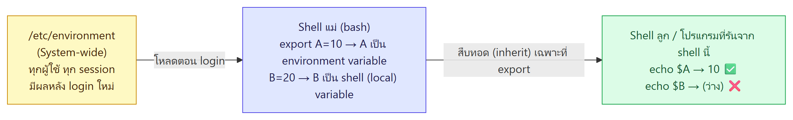

ภาพรวมบทนี้ (บทนี้ไม่มีไฟล์ Lab คู่กัน) ต่อจาก L8 เรื่อง process และ memory
(1) Observability — การเฝ้าดูระบบ: ทำไมต้องติดตาม CPU, memory, I/O และเครื่องมือ
top,htop,ps -ux / -aux,pgrep,kill(2) Environment Variables — ตัวแปรสภาพแวดล้อมที่เก็บข้อมูลของ session เช่น
$HOME,$SHELL,$PATH, ขอบเขต (global / local), ความต่างระหว่าง shell variable กับ environment variable และคำสั่งecho,env,printenv,set/unset,exportรวมถึงการตั้งค่าแบบ system-wide ใน/etc/environmentตามตารางเรียนคือสัปดาห์ 9 "memory และการจัดการสภาพแวดล้อม" และเป็นพื้นฐานของ shell script ในสัปดาห์ 10
1. ข้อมูลรายวิชา (ย่อ)
- เกณฑ์คะแนนเหมือนเดิม · สอบกลางภาคสัปดาห์ที่ 9 (25%) · ส่งแลป 23.59 น. ของวันอังคาร/วันที่เรียน · ทดสอบย่อยทุกสัปดาห์ก่อนจบคาบ
2. Observability
- สำคัญมากที่ต้องเฝ้าดู (observe) ว่าเกิดอะไรขึ้นทั่วทั้ง OS ตั้งแต่ kernel ไปจนถึงโปรแกรมที่ user ใช้
- สิ่งที่ monitor ได้: CPU usage, Memory usage, I/O traffic ฯลฯ
- ภาพ Linux Performance Observability Tools (brendangregg.com) แสดงเครื่องมือที่ใช้ดูแต่ละชั้นของระบบ เช่น
- ชั้น Applications / System Libraries / System Call Interface:
strace,ltrace,opensnoop - VFS / File Systems / Block Device:
lsof,iostat,biolatency,ext4slower - Scheduler / CPU:
top,atop,ps,pidstat,mpstat,perf,runqlen - Virtual Memory / DRAM:
vmstat,slabtop,free,numastat - Network (Sockets, TCP/UDP, IP, Net Device):
ss,nstat,tcpdump,netstat,ip,nicstat,ethtool - ภาพรวม:
sar,/proc,dmesg,dstat
- ชั้น Applications / System Libraries / System Call Interface:
💡 (อธิบายเพิ่ม) ไม่ต้องจำทุกเครื่องมือ — ที่เรียนในวิชานี้คือ
top,ps,free,vmstat(L8) และhtop,pgrep(บทนี้)
3. Tracking CPU Usage และ top
- CPU มักอยู่อันดับแรกของสิ่งที่ต้อง monitor เพราะเป็น "powerhouse" ของระบบ
- ⭐ ถ้า CPU ทำงานเกิน 80% ตลอดเวลา แปลว่าระบบอาจ CPU ไม่พอ สำหรับ OS และโปรแกรมที่รันอยู่
- หรืออาจเป็นสัญญาณของ ปัญหาด้านความปลอดภัย (security incident) หรือ โปรแกรมทำงานผิดพลาด
top= โปรแกรม monitor ที่ดู process "top" ของระบบแบบ real-time
top — ผู้ใช้ทุกคนใช้ได้ และเปลี่ยนการเรียงลำดับได้:
| คีย์ | เรียงตาม |
|---|---|
| Shift + M | memory usage |
| Shift + S | time |
| Shift + P | CPU usage (ค่าเริ่มต้น / default display mode) |
⚠️ (อธิบายเพิ่ม) ใน
topรุ่นใหม่ การเรียงตามเวลาใช้ Shift+T ส่วน Shift+S คือสลับโหมดเวลาสะสม — ตอนสอบให้ตอบตามสไลด์ (Shift+S) · เรียงตาม memory จาก command line ใช้top -o %MEM(L8)
4. htop
- htop = ตัวดูประสิทธิภาพระบบอีกตัว แสดงข้อมูลเหมือน
topแต่ มีสีแยก (color-coded) อ่านง่ายกว่า มีกราฟแท่ง CPU / Mem / Swap ด้านบน และเมนูปุ่ม F ด้านล่าง - คีย์เรียงลำดับเหมือน top: Shift+M memory · Shift+S time · Shift+P CPU (default)
(อธิบายเพิ่ม) ส่วนใหญ่ต้องติดตั้งเพิ่มด้วย
sudo apt install htop(ต้องตั้ง proxy เหมือน L6)
5. ps -ux / ps -aux
psแสดงข้อมูล process ที่รันอยู่และตาราง process ได้หลายรูปแบบตาม optionps -ux: ดูทุก process ที่บัญชีของเราเป็นเจ้าของ (ตัวอย่าง: process ของ khess เช่น/usr/lib/systemd/…,(sd-pam),sshd: khess@pts/0,-bash,ps -ux)ps -aux: แสดงทุก process ของทุก user
คอลัมน์: USER, PID, %CPU, %MEM, VSZ, RSS, TTY, STAT, START, TIME, COMMAND (STAT = สถานะ เช่น Ss, S, R+ — ตัวอักษรเดียวกับ L8)
6. pgrep ⭐
pgrep = พิมพ์ PID ของ process ที่ตรงเงื่อนไขที่ระบุใน argument
| คำสั่ง | ผล |
|---|---|
pgrep -u korakoch |
PID ของ process ที่ user korakoch เป็นคนเริ่ม (1115, 1117, 1129) |
pgrep -c -u korakoch |
นับจำนวน process (-c = count) → 3 |
pgrep emacs |
PID ของ process ชื่อ emacs → 8374 |
คำถามในสไลด์: ถ้าอยากแสดง process ที่ root รัน ใช้ argument อะไร? → pgrep -u root (และนับจำนวนด้วย pgrep -c -u root)
💡
pgrepvsps | grep:ps -uax | grep emacsได้ทั้งบรรทัดของ emacs และบรรทัดของgrep emacsเอง (smith 9051) ส่วนpgrep emacsได้แค่ PID ที่ต้องการ (8374) สะอาดกว่า เอาไปใช้ต่อกับ kill ได้ทันที
7. Controlling Processes และ kill
- เมื่อ process เริ่มทำงานแล้ว สามารถ stopped, restarted, killed และ prioritized ได้
- ฆ่า process ด้วย:
kill [option] [PID]
ตัวอย่าง:
→ ps -uax | grep emacs
smith 8374 ... emacs myfile.txt
smith 9051 ... grep emacs
→ pgrep emacs
8374
→ kill 8374
จาก man kill (ในภาพ): kill – send a signal to a process · สัญญาณเริ่มต้นคือ TERM · kill -l แสดงรายชื่อสัญญาณ · สัญญาณที่ใช้บ่อย: HUP, INT, KILL, STOP, CONT และ 0 · ระบุได้ 3 แบบ เช่น -9, -SIGKILL, -KILL · PID ติดลบหมายถึงกลุ่ม process · PID -1 = ทุก process ยกเว้นตัว kill เองและ init
(อธิบายเพิ่ม) STOP = หยุดชั่วคราว (สถานะ T ใน L8) · CONT = ทำต่อ · KILL (9) = บังคับจบทันที · ทางลัด:
pkill emacs= kill ตามชื่อ
8. Environment และ Variables ⭐
- Environment = สภาพแวดล้อมการใช้งานของ user ซึ่งกำหนดโดยค่าของตัวแปรต่าง ๆ
- Environment variable = ตัวแปรที่เก็บค่าข้อมูลของสิ่งแวดล้อมที่เกิดขึ้นเมื่อ user login เข้าระบบ
- ตัวอย่าง:
$HOME,$SHELL,$PATH— สังเกตว่ามี$หน้าชื่อตัวแปร (เวลาอ้างถึงค่า) - ความหมายเหมือน ตัวแปรในการเขียนโปรแกรม = ที่เก็บค่าข้อมูล เช่น
int x; x = 10; // x เป็นตัวแปรเก็บตัวเลขแบบ integer มีค่า 10
9. แสดงค่าตัวแปรด้วย echo
ค่าของตัวแปรแสดงได้ด้วยคำสั่ง echo
$ echo $HOME
/home/sudsanguan
$ echo $SHELL
/bin/bash
$ echo $PATH
/usr/local/sbin:/usr/local/bin:/usr/sbin:/usr/bin:/sbin:/bin:/usr/games:/usr/local/games:/snap/bin
ต้องมี $ เมื่อใช้ echo ⭐ (สไลด์ "echo shell-variables")
$ echo LOGNAME → LOGNAME (พิมพ์คำว่า LOGNAME ตรง ๆ)
$ echo $LOGNAME → sudsanguan (แสดงค่าของตัวแปร)
$ echo SHELL → SHELL
$ echo $SHELL → /bin/bash
$ echo PATH → PATH
$ echo $PATH → /usr/local/sbin:/usr/local/bin:...
💡 (อธิบายเพิ่ม)
$แปลว่า "เอาค่าของ…" ถ้าไม่มี$shell มองเป็นข้อความธรรมดา
10. Scope: Global vs Local ⭐
- ผู้ใช้ติดต่อกับ environment variables ผ่าน shell
- shell ทำหน้าที่เป็น command-line interpreter รันคำสั่งที่ผู้ใช้พิมพ์
- Environment variable มี "scope" (ขอบเขต):
| Scope | ความหมาย |
|---|---|
| Global environment variables | เข้าถึงได้จากทุกที่ภายใน environment ของ terminal ปัจจุบัน · script, โปรแกรม หรือ process ที่รันใน scope ของ terminal นั้นเข้าถึงได้ |
| Local environment variables | จำกัดอยู่ใน terminal ที่สร้างมันขึ้นมาเท่านั้น เข้าถึงได้เฉพาะ terminal ที่ให้กำเนิดมัน |
11. คำสั่งเกี่ยวกับตัวแปรสิ่งแวดล้อม ⭐⭐
| คำสั่ง | หน้าที่ (จากสไลด์) |
|---|---|
env |
แสดงรายการ environment variables ปัจจุบัน |
printenv |
แสดงทั้งหมด หรือเฉพาะตัวที่ระบุ |
set / unset |
ตั้ง / ยกเลิก shell และ environment variables |
export |
ตั้งค่า environment variables |
ผลของ env
แสดงเป็นบรรทัด ชื่อ=ค่า เช่น
SHELL=/bin/bash
LANG=en_US.UTF-8
LOGNAME=sudsanguan
USERNAME=sudsanguan
USER=sudsanguan
PWD=/home/sudsanguan
HOME=/home/sudsanguan
PATH=/usr/local/sbin:/usr/local/bin:/usr/sbin:/usr/bin:/sbin:/bin:/usr/games:/usr/local/games:/snap/bin
LC_TIME=th_TH.UTF-8
DISPLAY=:0
_=/usr/bin/env
(และอื่น ๆ เช่น VTE_VERSION, XDG_CURRENT_DESKTOP=ubuntu:GNOME, SHLVL=1, LC_*=th_TH.UTF-8)
ผลของ printenv
$ printenv SHELL → /bin/bash
$ printenv PATH → /usr/local/sbin:/usr/local/bin:...
$ printenv USER → sudsanguan
$ printenv LOGNAME → sudsanguan
$ printenv HOME → /home/sudsanguan
⚠️ สังเกตว่า
printenvใส่ชื่อตัวแปร "ไม่มี$ข้างหน้า" (ต่างจากecho $HOME)
💡 (อธิบายเพิ่ม)
env= แสดงทั้งหมด ·printenv= แสดงทั้งหมดหรือเจาะตัวเดียว ·set(ไม่ใส่อะไร) = แสดงทั้ง shell variables และ environment variables และฟังก์ชัน ยาวที่สุด
12. Environment Variables ที่พบบ่อย ⭐
| ตัวแปร | ความหมาย |
|---|---|
| USER | ผู้ใช้ที่ login อยู่ |
| HOME | home directory ของผู้ใช้ปัจจุบัน |
| SHELL | path ของ shell ของผู้ใช้ เช่น bash หรือ zsh |
| LOGNAME | ชื่อของผู้ใช้ปัจจุบัน |
| PATH | รายการ directory ที่ระบบจะค้นหาเมื่อรันคำสั่ง — ค้นตามลำดับ และใช้ executable ตัวแรกที่เจอ |
| LANG | การตั้งค่า locale ปัจจุบัน (ภาษา, รูปแบบ) |
| TERM | terminal emulation ปัจจุบัน |
💡 PATH สำคัญที่สุด (อธิบายเพิ่ม): ตอนพิมพ์
lsshell ไม่รู้ว่า ls อยู่ไหน จึงไล่หาใน/usr/local/sbin→/usr/local/bin→/usr/sbin→/usr/bin… จนเจอ/usr/bin/ls· ถ้าโปรแกรมอยู่ใน directory ที่ไม่อยู่ใน PATH ต้องพิมพ์ path เต็ม เช่น./myscript.sh· ดูว่าคำสั่งอยู่ที่ไหนด้วยwhich ls
13. Shell variables vs Environment variables ⭐⭐
- Shell variables มีอยู่เฉพาะใน shell ที่สร้างมันเท่านั้น
- Environment variables ถูกสืบทอด (inherited) ไปยัง child shells แต่ shell variables ไม่ถูกสืบทอด
- Shell variable เปลี่ยนเป็น environment variable ได้ด้วยคำสั่ง
export

ทดลองได้ (อธิบายเพิ่ม):
$ B=20 ← shell variable
$ export A=10 ← environment variable
$ bash ← เปิด shell ลูก
$ echo $A → 10
$ echo $B → (ว่าง)
$ exit ← กลับ shell แม่
⚠️ ความเชื่อมโยงกับ L8 (อธิบายเพิ่ม): shell ลูกคือ child process ของ bash — ได้รับสำเนา environment ของ parent ตอนถูกสร้าง · การแก้ตัวแปรใน child ไม่ย้อนกลับไปเปลี่ยน parent
14. การตั้งค่าตัวแปร ⭐⭐
| ระดับ | วิธีตั้ง | ตัวอย่างในสไลด์ | อยู่ได้นานแค่ไหน (อธิบายเพิ่ม) |
|---|---|---|---|
| System-Wide | แก้ไฟล์ sudo nano /etc/environment |
เพิ่มบรรทัด global_variable=1000 (ต่อจาก PATH="/usr/local/sbin:...") |
ทุกผู้ใช้ ถาวร มีผลหลัง login ใหม่ |
| Global | export NAME=Value (หรือ set NAME=Value ตามสไลด์) |
export A=10 → echo $A → 10 |
session ปัจจุบัน + process ลูก |
| Local | NAME=Value |
B=20 → echo $B → 20 |
shell ปัจจุบันเท่านั้น |
⚠️ ข้อควรระวัง:
- ห้ามมีช่องว่างรอบ
=—A = 10ผิด (shell จะคิดว่า A เป็นคำสั่ง) ต้องเขียนA=10(อธิบายเพิ่ม)- สไลด์ให้
set NAME=Valueเป็นอีกทางของ global แต่ ใน bash คำสั่งนี้ไม่ได้สร้างตัวแปร NAME (มันตั้ง positional parameter$1เป็นข้อความ "NAME=Value") — ใช้exportจะถูกต้องกว่า · ตอนสอบถ้าถามตามสไลด์ให้ตอบexport NAME=Valueหรือset NAME=Value(อธิบายเพิ่ม)- ค่าที่ตั้งด้วย
exportหรือNAME=Valueหายไปเมื่อปิด terminal ถ้าอยากให้ถาวรเฉพาะตัวเองใส่ใน~/.bashrc(ไฟล์ซ่อนที่เห็นใน L2) หรือถาวรทั้งระบบใส่ใน/etc/environment(อธิบายเพิ่ม)- ยกเลิกตัวแปรด้วย
unset NAME
คำศัพท์สำคัญ
| คำศัพท์ | ความหมาย | จำง่าย ๆ ว่า |
|---|---|---|
| Observability | การเฝ้าดูสิ่งที่เกิดขึ้นทั่ว OS (CPU, memory, I/O) | กล้องวงจรปิดของระบบ |
top / htop |
ดู process แบบ real-time / แบบมีสี | Task Manager |
| Shift+M / Shift+S / Shift+P | เรียงตาม memory / time / CPU (default) | M = Memory, P = Processor |
ps -ux / ps -aux |
process ของบัญชีเรา / ของทุก user | ของฉัน / ของทุกคน |
pgrep |
หา PID ตามเงื่อนไข (-u user, -c นับ) |
grep สำหรับ process |
kill [option] [PID] |
ส่ง signal (default TERM) ให้ process | ส่งสัญญาณ |
| Environment | สภาพแวดล้อมการใช้งานที่กำหนดโดยค่าตัวแปร | บรรยากาศของ session |
| Environment variable | ตัวแปรที่เกิดเมื่อ login เก็บข้อมูลสภาพแวดล้อม | การตั้งค่าที่ติดตัว |
| Shell variable | ตัวแปรที่อยู่แค่ใน shell ที่สร้าง ไม่สืบทอด | ตัวแปรในห้อง |
| Global / Local scope | เข้าถึงได้ทั้ง terminal และ process ลูก / เฉพาะ terminal ที่สร้าง | ทั้งบ้าน / ห้องเดียว |
$ |
ใช้ค่าของตัวแปร (echo $HOME) |
"ค่าของ…" |
env / printenv |
แสดง env variables ทั้งหมด / ทั้งหมดหรือตัวที่ระบุ (ไม่ใส่ $) | ดูตัวแปร |
set / unset |
ตั้ง / ลบตัวแปร | ตั้ง / ลบ |
export |
ทำให้เป็น environment variable (สืบทอดไป child) | ส่งออกให้ลูก |
/etc/environment |
ไฟล์ตั้งค่าตัวแปรทั้งระบบ | ตั้งค่าทั้งบ้าน |
| PATH | directory ที่ค้นหาคำสั่ง ตามลำดับ ใช้ตัวแรกที่เจอ | แผนที่หาคำสั่ง |
| USER, HOME, SHELL, LOGNAME, LANG, TERM | ผู้ใช้, home, shell, ชื่อผู้ใช้, locale, terminal | ข้อมูลพื้นฐานของ session |
สรุปท้ายบท / จุดที่มักออกสอบ
เรื่องที่ต้องจำ
- Observability: monitor CPU, Memory, I/O traffic ตั้งแต่ kernel ถึงโปรแกรมผู้ใช้
- CPU เกิน 80% ตลอด → CPU ไม่พอ หรืออาจเป็น security incident / software error
top/htop: Shift+M memory, Shift+S time, Shift+P CPU (default) · htop = top แบบมีสีps -ux= process ของเรา ·ps -aux= ของทุก userpgrep -u user,pgrep -c -u user(นับ) · process ของ root →pgrep -u root- process ถูก stopped, restarted, killed, prioritized ได้ ·
kill [option] [PID]default signal = TERM - Environment variable เกิดเมื่อ login · อ้างค่าด้วย
$·echo $HOME→/home/… - Scope: Global (ทั้ง terminal + process ลูก) vs Local (เฉพาะ terminal ที่สร้าง)
- คำสั่ง: env, printenv (ไม่ใส่ $), set/unset, export
- ตัวแปรที่พบบ่อย: USER, HOME, SHELL, LOGNAME, PATH, LANG, TERM
- Environment variables สืบทอดไป child shell · shell variables ไม่สืบทอด · ใช้
exportเปลี่ยน - ตั้งค่า: System-wide =
/etc/environment· Global =export NAME=Value· Local =NAME=Value
คู่ที่มักสับสน
| คู่ | ต่างกันที่ |
|---|---|
top vs htop |
ข้อมูลเดียวกัน vs มีสีและกราฟ อ่านง่ายกว่า |
ps -ux vs ps -aux |
process ของเรา vs ทุก user |
pgrep vs ps | grep |
ได้แค่ PID vs ได้ทั้งบรรทัดและติดบรรทัดของ grep เองมาด้วย |
echo $HOME vs echo HOME |
แสดงค่า vs แสดงคำว่า HOME |
echo $X vs printenv X |
ต้องมี $ vs ไม่ต้องมี $ |
env vs printenv vs set |
env vars ทั้งหมด vs ทั้งหมดหรือเจาะตัวเดียว vs ทั้ง shell + env vars |
| Shell variable vs Environment variable | อยู่ใน shell เดียว vs สืบทอดไป child |
| Global vs Local | export NAME=Value vs NAME=Value |
| Global vs System-wide | เฉพาะ session นี้ vs ทุกผู้ใช้ถาวร (/etc/environment) |
set vs unset |
ตั้งค่า vs ยกเลิก |
แนวคิดที่ต้องอธิบายได้
- ทำไมต้อง monitor CPU → เป็น powerhouse ถ้าใช้สูงตลอดแปลว่าทรัพยากรไม่พอหรือมีบางอย่างผิดปกติ (เช่น malware หรือโปรแกรมวนลูป)
- ทำไมพิมพ์
lsแล้วระบบรู้ว่าต้องรันไฟล์ไหน → shell ไล่หาใน directory ของ$PATHตามลำดับและใช้ตัวแรกที่เจอ - ทำไมตั้ง
B=20แล้วเปิด bash ใหม่echo $Bไม่มีค่า → B เป็น shell (local) variable ไม่ถูกสืบทอด ต้องexport B - ทำไม
pgrepดีกว่าps | grepสำหรับหา PID ไป kill → ได้เฉพาะ PID ไม่มีบรรทัดของ grep ปนมา